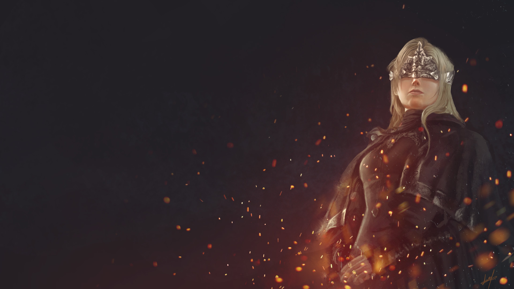
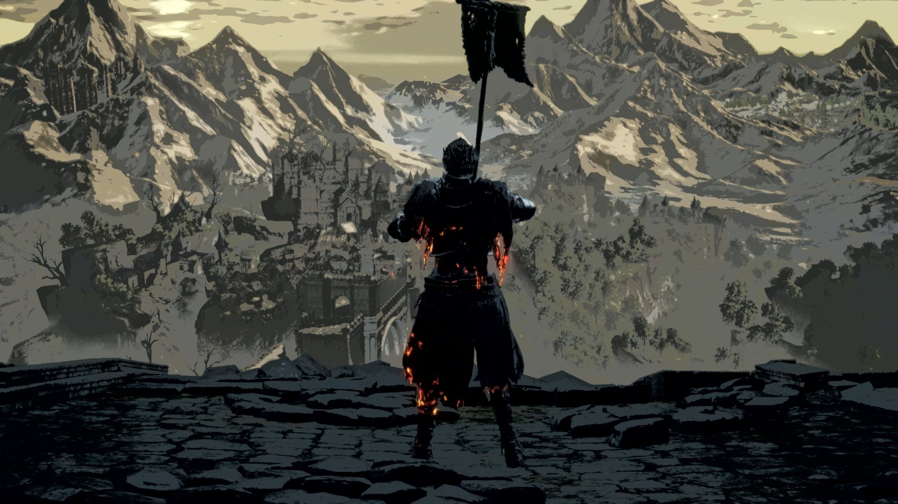
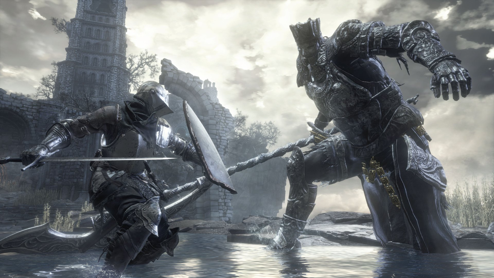

Dark Souls III, FromSoftware tarafından geliştirilip Bandai Namco Entertainment tarafından 2016’da yayımlanan bir aksiyon rol yapma oyunudur. Dark Souls serisinin üçüncü ve son oyunu olan yapım, dünyanın sonunu önlemek için yola çıkan “yanmamış” bir savaşçının hikayesini anlatır. Üçüncü şahıs bakış açısıyla oynanır ve oyuncular düşmanlarla savaşırken çeşitli malzemeler kullanabilir. Hidetaka Miyazaki’nin yeniden yönetmenliğe dönmesiyle geliştirilen oyun, hem eleştirmenlerden övgü almış hem de ticari başarı elde etmiştir. 2020’ye kadar 10 milyondan fazla satan oyun, Ashes of Ariandel ve The Ringed City adlı iki genişleme paketine ve 2017’de çıkan The Fire Fades Edition sürümüne sahiptir.

Dark Souls 3’te minimum çabayla hızlı bir şekilde seviye atlamak mı istiyorsun? Bu rehberde, istatistiklerini kısa sürede yükseltmeni sağlayacak en iyi erken oyun ruh (soul) kasma noktasını göstereceğim.

Bu rehberde size Dark Souls 3’te tüm Steam başarımlarını nasıl tek tek tamamlayacağınızı göstereceğim. Eğer oyunu gerçekten “tam bitirmek” istiyorsanız, doğru yerdesiniz!

Bu rehberde size Dark Souls 3 PvP’sinde rakiplerinizi ezmenizi sağlayacak en güçlü itemleri göstereceğim. Artık arenada kimse size karşı duramayacak!
"Yalnızca hakikatte efendiler tahtlarını terk edecek ve yanmamış olanlar yükselecek. İsimsiz, lanetli ölümsüzler, kül olmaya bile layık değiller. Ve işte böyledir, küller kor arar." "Bunların, kendini şenlik ateşine atan bir azizin kalıntıları olduğu söyleniyor. Ama bunu asla kesin olarak bilemeyeceğiz, çünkü is ve kül hiçbir hikaye anlatmaz." Girişte de belirtildiği gibi, Unkindled'lar külden oluşan varlıklardır ve Kül Lordu olmaya layık değillerdir. İlk Alev sönme tehlikesi altındayken çalan bir çanın sesiyle uyanırlar. Kül Mezarlığı'nda uyanırlar ve İlk Alev'in közlerini ararlar. Oyun boyunca kahraman, Unkindled, Kül Şampiyonu veya Küllü Kişi olarak adlandırılır ve bunların hepsi, Unkindled'ların kökenlerine gönderme yapar. Unkindled olmanın ne anlama geldiğine dair bazı spekülasyonlar var. Her şeyden önce, belirli Unkindled NPC'leri öldürdüklerinde kül düşürürler, yani canlanmadan önce bir noktada yakılmışlardır. Dolayısıyla Unkindled'lar belki de şenlik ateşi yaratma süreciyle ilgilidir ya da İlk Alev'i birbirine bağlayıp bu süreçte ölen isimsiz Lanetli ölümsüzlerdir. Öte yandan, Cinder Lordları o kadar güçlü varlıklardı ki, bağlanmadan sağ kurtuldular ve sıradan bir Kül yerine Cinder'a dönüştüler. Bu teoriyi destekleyen ilk ipucu, Cinder ve Ash kelimelerinin bir oyunudur. İkincisi, bir malzemenin tamamen yanmasından sonra geriye kalanları ifade ederken, Cinder tamamen tüketilmemiş olanı ifade eder. Ölümsüzler kendilerini şenlik ateşine atıp Alev'i beslerler, ancak bu süreçte tamamen tüketilirler ve geriye sadece tutuşmak için közlere ihtiyaç duyan küller kalır. Bu küller, oyun boyunca sayısız kez bulunur ve bu da Karanlık ve Alev'in döngüsel doğasını ima eder. Giriş cümlesi "Kül köz arar" şimdi şekilleniyor. Oyundaki közler şu şekilde tanımlanıyor: "Hiçbir Unkindled, bir şampiyonun göğsünde yanan közleri gerçekten ele geçiremez; bu da tam olarak sıcaklık özlemlerini bu kadar yoğun kılan şeydir. Alev gücünü kazan ve ölüme kadar maksimum HP'yi artır. Ateşin gücüyle, Unkindled'ın çağırma işaretleri görünür hale gelir ve köz arayanlar iş birliğine katılmaya çağrılabilir. Ancak közlerin istilacıları da çekebileceğine dikkat edin." DSII'den, birçok neslin geçtiğini ve Alev'i birleştirmek ve ateşi yeniden alevlendirmek için birçok kişinin kendini feda ettiğini biliyoruz. Cinder Lordları, birçok nesil sonra geldi ve birinin ateşten sağ çıkması nadirdir. Hayatta kalmak için kişinin kendine özgü bir şekilde güçlü olması gerektiği ve buna rağmen formunun değiştiği anlaşılıyor. Gwyn bir Cinder Lordu'ydu, ancak formunun bağlantıyla değiştiği ve onun gibi büyük biri için bile büyük bir fedakarlık olduğu açık. Çok sayıda nesil geçti, açıkçası çok sayıda yanmamış ve elbette Kül Mezarlığı'nda çok sayıda mezar olurdu. Ayrıca, ateşi birbirine bağlayan tüm Ölümsüzlerin bir tezahürü olan, tüm dövüş stillerinde iyi görünen Cinder Ruhu'na karşı da savaşıyoruz. Kül Lordları'nın tamamen yanmadığını ve ateşi yaktıktan sonra hayatta kaldığını destekleyen bir diğer ipucu da, yanmamış olanların insan formlarıyla dirilmesidir. Tüm Kül Lordları, Ludleth gibi kömürleşmiş cesetleriyle uyanır ve boss dövüşlerine bakılırsa, hepsinin belli bir ateş gücü kazanmış olduğu anlaşılıyor. Aldrich de ölmedi; yaklaşan Derin Deniz Çağı'nı gördü ve Tanrıları yok etmeye başladı. Unkindled'ı, Alev uğruna kendilerini feda eden tüm önceki Ölümsüzlerle ilişkilendiren son ayrıntı bir şarkıda bulunur. Bu şarkının adı DSIII'ün girişinde geçer. DSI'ı geçtiğinizde karakterinizin fırında yandığını görürsünüz ve ardından İsimsiz Şarkı çalmaya başlar. Bu hüzünlü ton, görevinizin sonunda çalınır ve karakterinizi tanımlayan şeydir. Karakterlerimiz, tanrıların çağını uzatmak için her şeyi yaptı ve binlerce kez öldü. Bu birçok kez oldu ve isimleri yok, kimse isimlerini hatırlamayacak veya onlar hakkında şiir yazmayacak. Yakılmamış olanlar ne olursa olsun, görevleri belli. İlk Alev'i yeniden birleştirmek ve ateş çağını korumak için Cinder Lordları'nı bulmalılar. Ayrıca, geçmiş oyunlarda gördüğümüz oyuklaşma sürecine tamamen bağlı olmayan ve Oyuk'a geçmek için Karanlık Mühürler edinmeleri gereken ölümsüzler.
"Eğer efendiler tahtlarına kendileri dönmeyeceklerse, kül olarak dönsünler." İlk Alevi Fırında yeniden birleştirerek ve Hayatta Kalarak Kül Lordu olunur. Şu anda 5 Kül Lordu var ve İlk Alevin Birleştirilmesini yeniden canlandırmak için 5'inin de küllerine ihtiyaç var. 5 Lord; Derinlerin Azizi Aldrich, Sürgün Ludleth, Dev Yhorm, Farron'un Ölümsüz Lejyonu ve soyunun son umudu Lothric'tir. Sürgün Ludleth, uzun zaman önce kendi isteğiyle İlk Alev'i birbirine bağladı. Aldrich bir zamanlar insanları yutan bir din adamıydı. O kadar güçlendi ki, Alev'i yeniden birleştirmek için kullanıldı. Kül Lordu rütbesine yükseldikten sonra Aldrich, tanrıları yutmaya çalıştı ve hatta etrafında Derinliklerin Sable Kilisesi'ni kuran bir tarikat bile kurdu. Farron'un Ölümsüz Uçurum Gözcüleri Lejyonu, kadim bir kurdun kanını içiyordu. Kurt kanı, Uçurum Gözcülerini efendileri olan efsanevi Uçurum Artorias'a bağlıyordu. Artorias'ı taklit eden Uçurum Gözcüleri, Uçurum yaratıklarına karşı koruma sağlıyordu. Uçurum Gözcüleri, Alev'i yeniden birleştirmek için kendi paylarına düşen Kurt Kanı üzerine yemin ettiler. Dev Yhorm, İlk Alev'i yeniden birleştirerek Kutsal Alev'i sona erdirmeye çalıştı. Kutsal Alev'i yok etmek yerine, başkent yanarak Yhorm hariç herkesi öldürdü. Pontif Sulyvahn, Kutsal Başkent'e gitti ve Kutsal Alev'i gördü. Bu, Yhorm'un Alev'i Aldrich'ten önce birleştirdiğine işaret ediyor. Lothric, Alev'i yeniden birleştirmeyi reddetti ve bunun yerine kardeşiyle birlikte uzaktan izlerken Alev'in sönmesine izin vermeyi seçti.
"Derinlikler başlangıçta huzurlu ve kutsal bir yerdi, ancak birçok iğrenç şeyin son durağı haline geldi. Derinlikler hakkındaki bu hikâye, bu dehşetlerin ortasında ibadet edenlere koruma sağlıyor." "Derinlerde gizlenen bu böceklerin, göz açıp kapayıncaya kadar deriyi yırtıp ete gömülmek için dişlerle kaplı minik çeneleri vardır ve bu da yoğun kanamaya neden olur." "Derinlerden yükselen ruhlar, hayata doğru çekilerek hedeflerini takip ederler." "Derinlik Katedrali'nin tortularında bulunan, aşılanmış titanit cevheri. Derinlik silahları yaratmak için aşılamada kullanılır. Derinlik silahları karanlık hasar verir, ancak ölçekleme etkilerini kaybeder. İnsan aklının ötesinde bir karanlık vardır." Dark Souls özetinde belirtildiği gibi, Uçurum, Oolacile'de yaşanan olaylardan sonra yaratıldı ve Manus'un insanlığı işkence nedeniyle kontrolden çıktıktan sonra doğdu. İnsanlık sıcak ama aynı zamanda tehlikeli bir şey olarak tanımlanıyor, bu yüzden rahatsız edildiğinde Uçurum'u yarattı. Artorias onu durdurmak için buraya geldi ve yüzüğünde, uçurum yaratıklarıyla bozulmamak ve öldürülmemek için bir anlaşma yaptığı belirtiliyor. Bu kısım önemli çünkü bize insanlığın karanlık ruhtan doğduğu söyleniyor, bu da karanlığı ima ediyor. Ancak bu karanlık, rahatsız edilip Uçurum'u yaratana kadar özünde kötü değildi. Uçurum her şeyi bozar ve herkesi öldürür, ancak bazı yaratıkların bu tuhaf yerde yaşadığı görülüyor. Yukarıdaki açıklamalardan da anlaşılacağı gibi, Derinlik başlangıçta sakindi, ancak daha sonra iğrenç yaratıkların mekanı haline geldi. Derinliklerde neredeyse tüm canlıları öldüren böcekler var. Derinlik Karanlıktır, ancak insanlığın ötesinde uzanan ve aynı zamanda karanlık olan bir Karanlık. Derinlik, Uçurum olabilir. Lord Ruhlar bozulduğunda, canavarlar yaratırsınız. Izalith Cadısı, kendi Lord Ruhuyla bir İlk Alev yaratmaya çalıştı ve Kaos yarattı. Oolacile halkı, Karanlık Ruh'un (Manus) bir parçasını bozdu ve Uçurum'u yarattılar. Derinliklerin doğası hakkında son bir ipucu, Farron'un Ölümsüz Lejyonu boss ruh silahları olan Kurt Şövalyesi'nin Büyük Kılıcı ve Farron'un Büyük Kılıcı tarafından verilir; çünkü her iki kılıç da Aldrich ve Derinliklerin Diyakozları'na ekstra hasar verir. Bu silahlar uçuruma karşı savaşmak ve uçurum düşmanlarına daha fazla hasar vermek için tasarlanmıştır, dolayısıyla Aldrich ve Diyakozlar Uçurum ile akrabadır.
Aldrich, ateşin bağlanmasından sonra kendi hırslarına kapılarak görevlerini ihmal eden bir diğer Cinder Lordu'dur. Geçmişte bir din adamıydı ama bir noktada insan eti yemeye başladı ve Aldrich'in Yakut veya Safir'inden de anlaşılabileceği gibi bundan çok keyif aldı: "Et iştahıyla meşhur olan bu adam, kurbanlarının çığlıklarını dinlerken hayatın son ürpertilerini tatmanın sevincini başkalarıyla paylaşma arzusuna sahipti." Muhtemelen, belki de korkudan dolayı tarikatı için bazı takipçiler edindiği Derinlik Katedrali'nin kurucusudur. Kurbanları, Ölümsüz Yerleşiminden Katedral'e Kurban Yolu aracılığıyla taşınırdı. Bu, Evangelist Set'ten anlaşılıyor: "Hepsi kadın olan bu öğretmenler, Ölümsüz Yerleşiminin sakinlerini aydınlatmak ve kurban yoluna taşıyıcılar göndermek için geldiler." Horace'ın canlı canlı yutulmaktan kurtulduğu ve diğer çocuklarla birlikte hayatta kaldığı da belirtiliyor; bu da Anri'nin yaptığı bir şey. Bu ipucu, esas olarak Anri'nin ilk karşılaşmamızdan beri Aldrich'i öldürmeye olan saplantısından, hatta bir çağrıdan kaynaklanıyor. Horace Cellat Zırhı da bize bir şeyler anlatıyor: "Soğuk ve hantal iç kısmına hayran olan Horace the Hushed'ın çelik zırhı. Asıl sahibinin, öldürülüp zırhı soyulan yozlaşmış bir cellat olduğu söyleniyor. Horace, Aldrich'in pençesinden kurtulan iki çocuktan biri." Bir noktada alev sönmeye başladı ve Ölümsüz laneti tekrar ortaya çıktı, yani muhtemelen ölümsüz insanları da yedi. Bunu vurgulayan şey, katedralin dışında çok sayıda zayıf ölümsüz beden olması; mezar bekçisinin de ima ettiği gibi, Aldrich bu bedenleri bitirmemiş: "Çürüyen, yırtık pırtık etek, cübbe, başlık ve örtü. Derinlik Katedrali'ndeki mezar bekçilerinin kıyafetleri. Mezar bekçileri, katedrali istila eden sürekli yükselen cesetlerden kurtulmakla görevliydi. Giysileri tamamen çürümüş, yaptıkları işin kan ve müsilajına bulanmış." Aldrich'in bir din adamı olarak başladığını, ancak sonra yozlaştığını daha önce söylemiştik. Yozlaşmanın bu kadar çok insanı yemesinden önce gerçekleşip gerçekleşmediği bilinmiyor, ancak (kasıtlı olarak) Uçurum'a düşkün hale geldi. Bu kadar çok insanı öldürdükten ve kurbanlarının diri diri yenirken çektiği acının tadını çıkardıktan sonra, karanlık ruhun önemli bir kısmını bozmuş ve kendini Uçurum benzeri bir yaratığa dönüştürmüş olabilir. Bir süre sonra, krallığı yöneten kişi, Hawkwood'un anlattığı gibi, onu azizlik için değil, kudret için aleve bağladı. Ardından, yaklaşan Derin Deniz çağına dair vizyonlar gördü ve bunun yerine Tanrıları yutmaya başladı. Bunun iki olası açıklaması olabilir. Ateş Çağı, Tanrılar Çağı anlamına gelir, bu yüzden karanlık bir çağda bir gün hüküm sürmek için tüm tanrılardan kurtulmaya çalışacaktı. İkinci olarak, Uçurum yayılırsa hayatta kalmak için daha güçlü bir şeye dönüşmesi gerekecekti. Lordun Külleri ve Aldrich'in Ruhu sırasıyla şöyledir: "Aldrich insanları yiyerek lord oldu, ama tahtından hayal kırıklığına uğradı ve bunun yerine tanrıları yiyerek efendi oldu." "Aldrich, ateşin sönmesi üzerine düşünürken, derin deniz çağının yaklaştığı vizyonlarını canlandırdı. Yolun zorlu olacağını biliyordu ama korkmuyordu. Tanrıları kendisi yutacaktı." Her neyse, birkaç tanrıyı yuttu ve ateşi yaktı, ardından külden bedeni mezara götürüldü. Uyandığında, Sulyvahn'dan bir hediye almak için Katedral'den Anor Londo'ya yürüdü: Gwyndolin. Onunla savaşırken hâlâ karanlık ay tanrısını yutuyor olabilir, çünkü hâlâ bir parçasını görüyoruz. Eğer bu doğruysa, Priscilla hayatta demektir, çünkü Gwyndolin'i yutarken onunla ilgili bir rüya görmüştür. Karanlık Ay Uzun Yayı ve Yaşam Avı Tırpanı: "Aldrich tarafından yavaş yavaş yutulan Karanlıkay Gwyndolin'in Uzun Yayı. Bu altın yay güçlü bir büyüyle doludur ve Ay Işığı Okları ile çok etkileyicidir." "Aldrich, Karanlık Ay Tanrısı'nı yavaşça yutarken bir rüya gördü. Bu rüyasında, saklanan genç, solgun bir kızın suretini gördü."
İrithyllian cadıları tarafından kullanılan Küfürlü Alev. Yalnız Yhorm, Küfürlü Alev'i dindirmek için Kül Efendisi oldu; çünkü kendisinden efendi diye bahsedenlerin samimiyetsiz olduğunu çok iyi biliyordu. Dev Yhorm, Kül Efendisi olduktan sonra Küfürlü Başkent, ateş tarafından yok edildi. Gökyüzünden doğan ateşin, sadece insan etini yaktığı söylenir. Küfürlü Alev, belirli bir kahinin akrabaları olan bu kadınların lanetiyle tetiklenmişti; ancak suçluluklarına rağmen, hiçbir kaygı duymadan yaşamaya devam ettiler. Silah infüzyonunda kullanılan kömür. Kutsal Başkent'i yakan yangının kalıntıları, buzlu bir kafatasında saklanıyor. Tapınaktaki demirciye, karanlık, kan ve oyuk infüzyonu için değerli taşların kullanılmasına izin vermesi için verin.
Karanlık İşaret, ölümsüzlerin bir simgesidir. Bu işaretle lanetlenenler ölümden sonra yeniden doğar ve sonunda akıllarını kaybedip içi boşalır. Bu, ölümsüzlerin sonunda delirerek evlerinden sürülmelerinin bir nedenidir. Horace, başlangıçta Mavi Nöbetçiler antlaşmasının bir üyesi ve Anri'nin bilinen bir dostu olmasına rağmen, daha sonra karşılaştığı herkese saldırdığı görülen bir örnektir. Tutulma, Lothric Kalesi'nin kilidi açıldıktan sonra Lothric Kalesi'nde ve birkaç başka bölgede ortaya çıkıyor. Sönmekte olan alevin çağırdığı bir işaret olabilir ve biraz Karanlık İşaret'e benziyor. *Spekülasyon* Belki de Ölümsüzleri çağırıp ona bağlanıp ömrünü uzatıyor. Belki de Ateş'in söndüğünü ve Ateş Çağı'nın sona erdiğini simgeliyor.